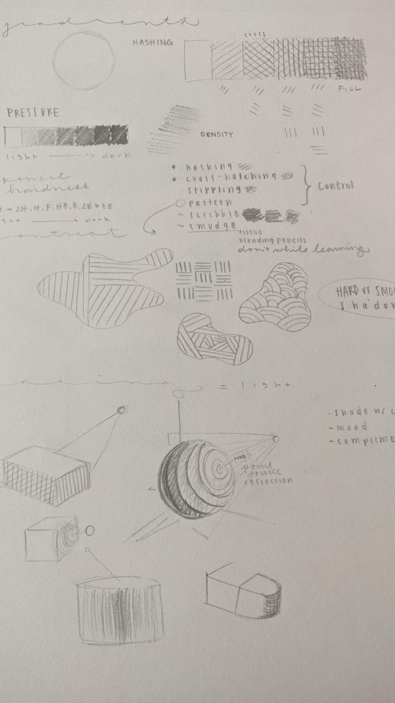
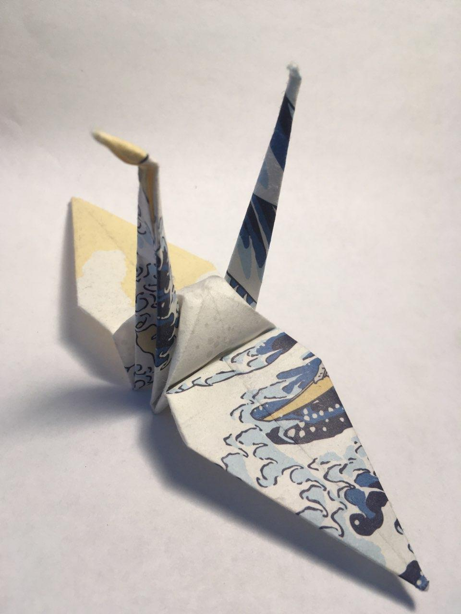

Dealing with a New Normal
Quarantine has made it difficult to enjoy many things that we might enjoy, but it's also an opportunity to maybe pick up some hobbies. We wanted to talak about some hobbies that we've picked up while in quarantine.
Art is a great creative outlet even without any experience. Although I have been drawing for years, I never took it very seriously until winter quarter when I took a rec class in UCSD's Main Gym. My peers were all at differing skill levels, and the instrutor assured us that everyone could learn something from just the basics. It was true. I gained confidence in practicing art, and drawing both physically and digitally throughout the quarantine has proved to be relaxing (especially when everything else is so stressful). Click on the image below to see my notes on shading and figure drawing.
Origami is the Japanese art of folding paper. Origami is a hobby that I had previously done, but I decided to pick it up again during quarantine. My days have become full of staring at screens whether it be for classes or for entertainment. There's something therapeutic for me to just focus on folding paper. Origami is especially easy to get into, as it just requires a piece of paper and a tutorial to follow. I personally enjoy following tutorials from Jo Nakashima on YouTube. If you're just starting out, make sure to find a tutorial for a relatively easy project before trying more complex projects. At first, it can be hard to understand the folds that tutorials are making, but just take your time and keep trying and you'll get it down eventually. I find it extremely difficult to do anything perfectly the first time, but if you keep practicing you can make really cool creations just out of paper. If you decide that you're really enjoying origami, you can purchase hundreds of beautiful sheets of origami paper on Amazon for a pretty low cost.
